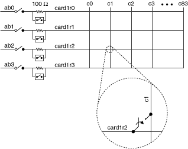

The following figure represents the NI 2865A in the 1-wire 4×84 matrix topology.

The immediate operation, niSwitch Connect Channels VI or the niSwitch_Connect function with parameters card1r2 and c1, results in the following connection:
signal connected to card1r2 is routed to c1
The following figure identifies the pins for the NI 2865A.